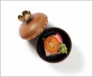
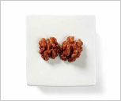
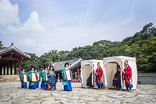
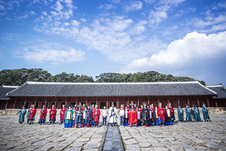

-종묘 묘현례-
‘묘현례’는 왕실 혼례를 마친 후 조선왕조 역대 왕과 왕비의 신주가 모셔진 종묘를 알현(謁見,지체가 높은 귀한 사람을 찾아가 뵘)하는 의례로,
시민배우들이 직접 왕과 왕비, 세자와 세자빈, 상궁 등의 다양한 역할로 직접 참여하여 묘현례를 체험해보는 시민 참여 프로그램입니다.
조선시대 종묘에서 행해지는 국가 의례 중 왕실 여성이 참여 하는 유일한 행사였던 묘현례, 그 뜻깊은 왕실 행사에 여러분들을 초대합니다.
프로그램 소개
묘현례 순서
|  | |
1. 국왕, 왕세자 봉심 준비국왕과 왕세자, 문무백관이 국궁사배로 선대왕께 인사를 올림 |
2. 국왕, 왕세자 신실 봉심
국왕과 왕세자가 선대왕들의 신주가 모셔진 신실을 살핌 |
|  |  |
3. 국왕, 왕세자 소차 이동문무백관 퇴장 후 국왕과 왕세자 소차로 들어감 |
4. 왕비, 세자빈 알묘
왕비와 세자빈 선대왕들께 공식적으로 인사를 올림 |
|  | |
5. 왕비, 세자빈 퇴장인사를 마친 왕비와 세자빈은 동문 밖으로 퇴장 |
6. 등장인물과 사진 촬영국가의례의 복식을 차려입은 시민배우 참가자와의 사진 촬영 |